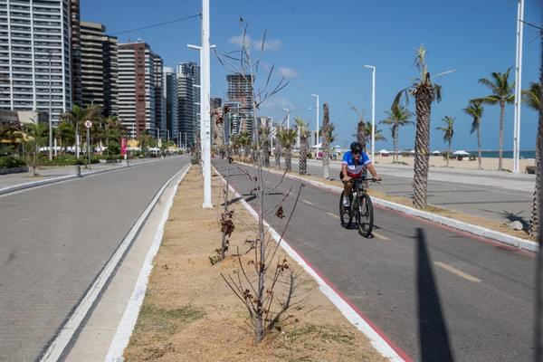
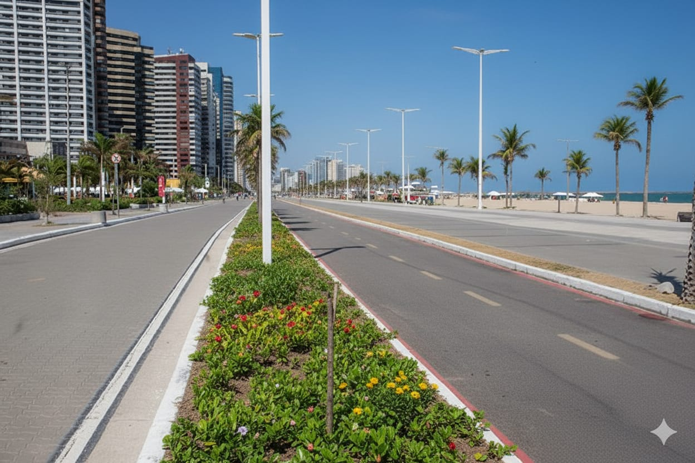
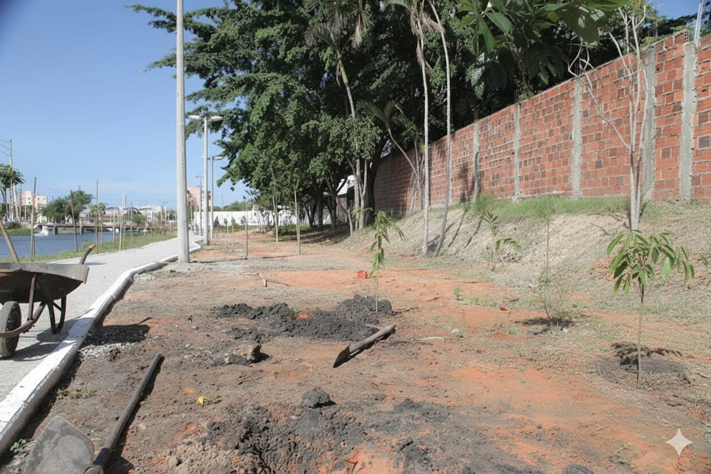
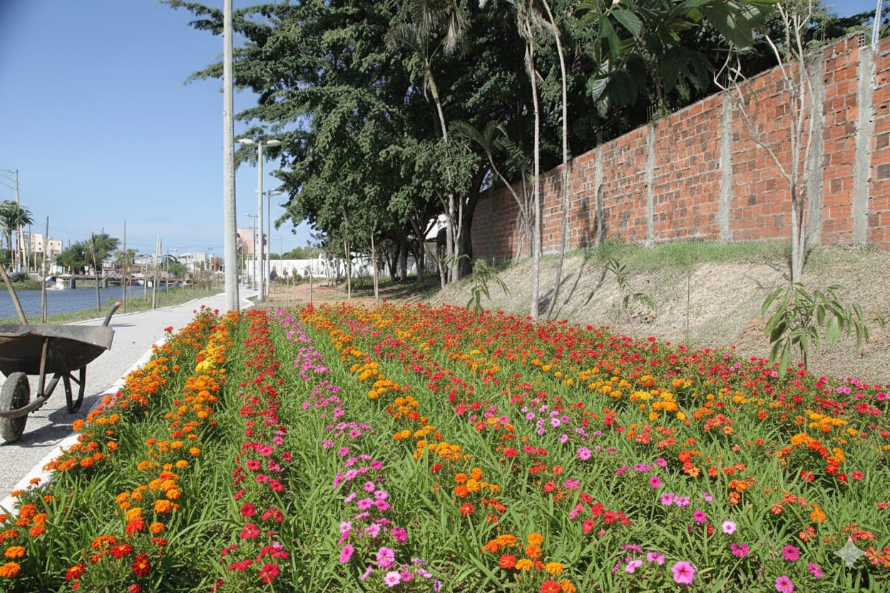
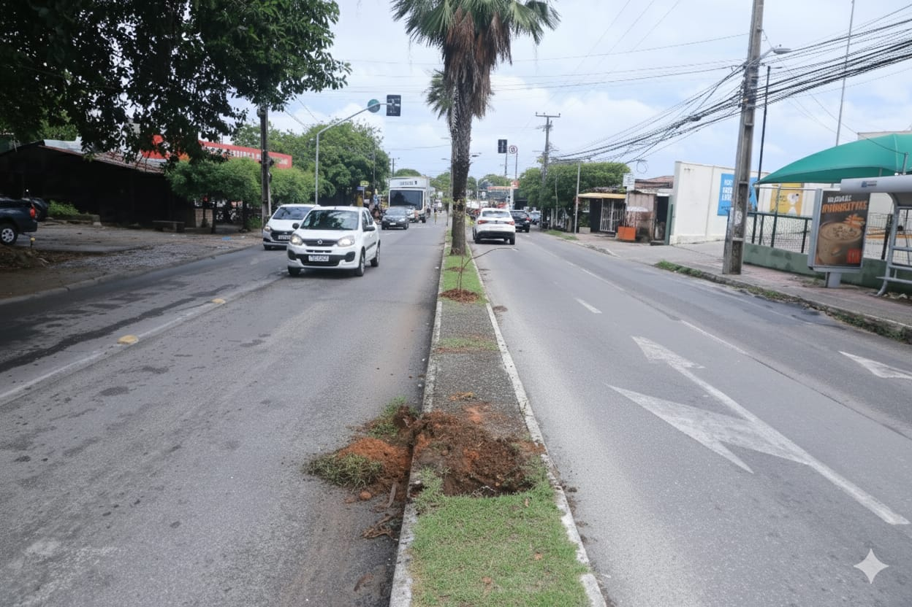
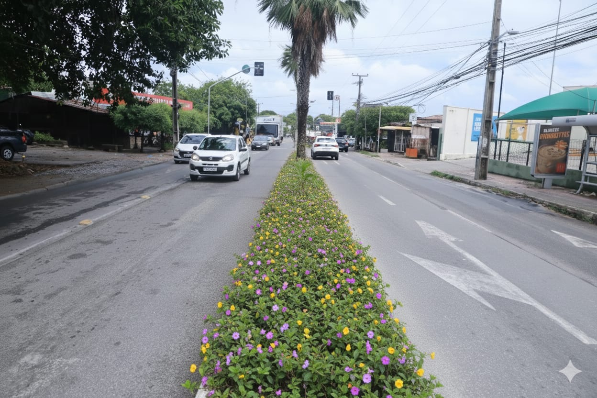

☰
Sobre o projeto
Sobre as mudas
Como ficaria Fortaleza
Com o objetivo de incentivar ainda mais o projeto, usamos Inteligência Artificial para mostrar como seria o antes e o depois de algumas partes de Fortaleza com mais área verde:
 
 
 